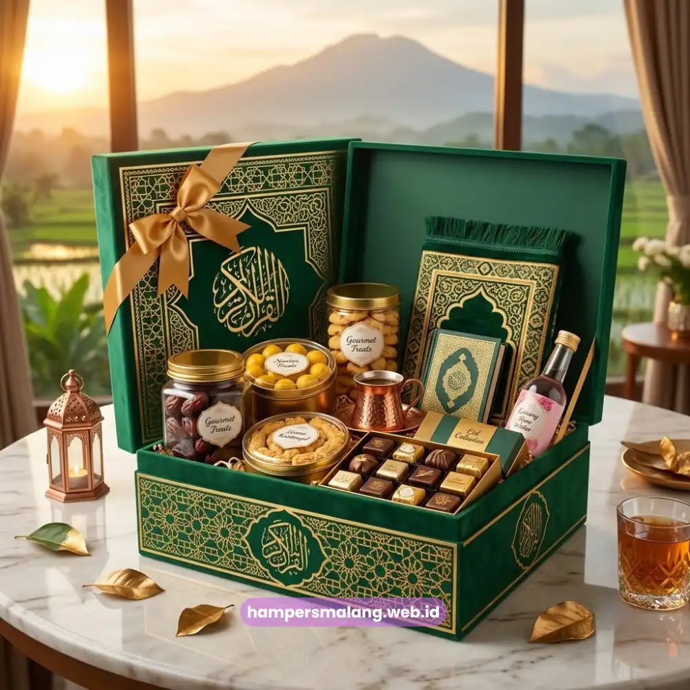

Hampers Lebaran perusahaan Jawa Timur adalah paket cinderamata khusus yang disiapkan menjelang Hari Raya Idulfitri untuk klien, mitra bisnis, dan karyawan sebagai bentuk apresiasi tahunan.
Momen Lebaran menjadi salah satu waktu paling strategis bagi perusahaan untuk mempererat relasi bisnis melalui hadiah bernuansa perayaan.
Hampers ini biasanya berisi kombinasi makanan khas Lebaran, produk premium, dan sentuhan branding perusahaan yang konsisten.
- Hampers Lebaran perusahaan berfungsi sebagai simbol apresiasi tahunan kepada klien dan karyawan.
- Isi hampers umumnya menyesuaikan nuansa perayaan, seperti kue kering, makanan khas, dan produk premium.
- Waktu pemesanan idealnya dilakukan jauh sebelum bulan Ramadan untuk menghindari keterbatasan stok.
- Kustomisasi branding tetap penting agar hampers mencerminkan identitas perusahaan meski bernuansa perayaan.
Mengapa Hampers Lebaran Penting bagi Relasi Bisnis Perusahaan
Hampers Lebaran menjadi momen emosional yang mempertemukan nilai bisnis dan nilai personal, sehingga pemberian hampers pada momen ini cenderung lebih membekas dibandingkan momen lainnya.
Ketika perusahaan memberikan hampers Lebaran yang disusun dengan baik, klien dan karyawan tidak hanya menerima produk, tetapi juga merasakan perhatian personal dari perusahaan.
Bagi perusahaan yang beroperasi di Jawa Timur, momen Lebaran juga menjadi kesempatan untuk memperkuat hubungan dengan mitra bisnis lintas kota, mulai dari Surabaya, Malang, hingga Sidoarjo.
Hampers yang tepat dapat menjadi pengingat visual akan kerja sama yang telah terjalin sepanjang tahun.
Bagaimana Hampers Lebaran Berbeda dari Hampers Perusahaan Biasa?
Hampers Lebaran berbeda dari hampers perusahaan pada umumnya karena mengusung nuansa perayaan yang lebih kental, baik dari sisi warna kemasan, jenis produk, maupun pesan yang disampaikan.
Sementara hampers perusahaan reguler cenderung netral dan formal, hampers Lebaran biasanya menonjolkan elemen kehangatan dan kebersamaan khas hari raya.
Baca Juga: Hampers Perusahaan Jawa Timur untuk Klien dan Karyawan
Isi Hampers Lebaran yang Cocok untuk Klien dan Karyawan
Isi hampers Lebaran yang ideal untuk klien dan karyawan umumnya terdiri dari kombinasi makanan khas hari raya, produk premium tahan lama, dan elemen personalisasi seperti kartu ucapan resmi perusahaan.
Kombinasi ini dipilih agar hampers terasa relevan dengan momen sekaligus tetap merepresentasikan citra profesional perusahaan.
Beberapa kategori isi yang umum digunakan meliputi:
- Kue kering dan camilan khas Lebaran dengan kemasan eksklusif.
- Produk makanan tahan lama seperti sirup premium atau teh dan kopi kemasan khusus.
- Merchandise fungsional seperti mukena, sarung, atau peralatan ibadah dengan sentuhan branding halus.
- Kartu ucapan resmi yang mencantumkan nama perusahaan sebagai pengirim.
Perusahaan dapat menyesuaikan kombinasi isi hampers berdasarkan segmentasi penerima, misalnya isi yang lebih premium untuk klien korporat dan isi yang lebih variatif untuk karyawan internal.

Apakah Isi Hampers Lebaran Perlu Disesuaikan dengan Segmen Penerima?
Isi hampers Lebaran sebaiknya disesuaikan dengan segmen penerima agar pesan apresiasi terasa lebih tepat sasaran.
Klien korporat besar umumnya lebih menghargai kemasan minimalis dengan produk premium, sementara karyawan internal cenderung lebih menyukai variasi isi yang lebih beragam namun tetap berkualitas.
Baca Juga: Ulasan Lengkap Hampers Lebaran untuk Kantor dan Klien
Waktu Ideal Memesan Hampers Lebaran Perusahaan
Waktu ideal memesan hampers Lebaran perusahaan adalah beberapa minggu sebelum awal bulan Ramadan, karena periode ini merupakan masa produksi dan distribusi yang paling sibuk di industri corporate gifting.
Pemesanan yang dilakukan terlalu dekat dengan Lebaran berisiko menghadapi keterbatasan stok bahan premium maupun waktu produksi yang lebih singkat.
Beberapa pertimbangan waktu yang perlu diperhatikan:
- Perencanaan anggaran dan jumlah penerima sebaiknya dilakukan sejak awal tahun.
- Proses kustomisasi branding memerlukan waktu tambahan dibandingkan hampers tanpa personalisasi.
- Pengiriman ke wilayah yang lebih jauh dari pusat kota di Jawa Timur memerlukan alokasi waktu distribusi yang lebih panjang.
Dengan perencanaan yang matang, perusahaan dapat memastikan hampers Lebaran sampai tepat waktu tanpa mengorbankan kualitas kemasan maupun isi produk.
Hampers Lebaran perusahaan Jawa Timur adalah investasi relasi bisnis yang efektif ketika disiapkan dengan perencanaan matang, isi yang relevan, serta branding yang konsisten dengan identitas perusahaan.
Momen Lebaran menjadi kesempatan emas untuk menunjukkan apresiasi kepada klien dan karyawan sekaligus memperkuat citra profesional perusahaan.
Tanya Jawab Seputar Hampers Lebaran Perusahaan
Sebaiknya pemesanan dilakukan beberapa minggu sebelum awal Ramadan agar proses produksi dan pengiriman berjalan optimal tanpa terburu-buru.
Isi yang umum dipilih meliputi kue kering, makanan tahan lama, merchandise fungsional, dan kartu ucapan resmi dari perusahaan.
Ya, hampers Lebaran perusahaan dapat dikirim ke berbagai kota di Jawa Timur sesuai daftar penerima yang disiapkan perusahaan.

Butuh Hampers Lebaran?
Solusi Hampers & Corporate Gift Kreatif di Jawa Timur.
Ditulis oleh Tim Maroon Souvenir
Sahabat mahasiswa dan pelaku bisnis di Malang Raya. Berpengalaman menangani merchandise event kampus, instansi pemerintahan, dan hotel berbintang di Batu.